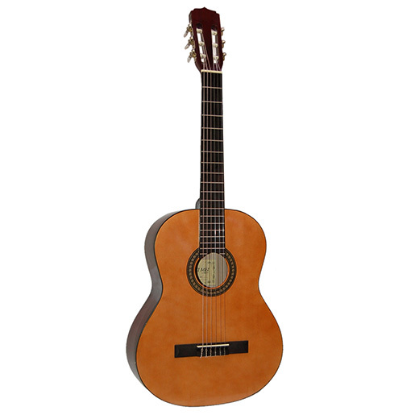
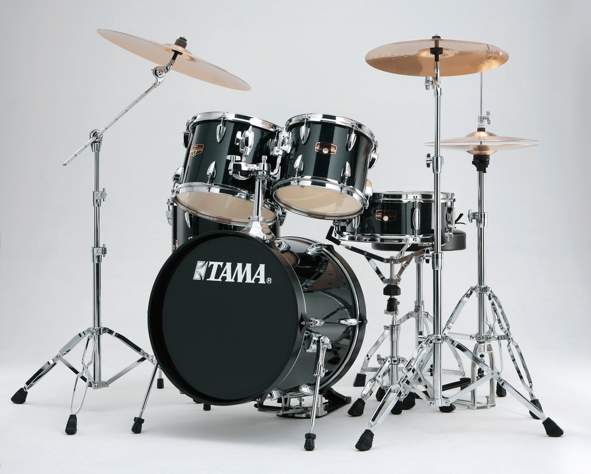

Strumenti
Chitarra
La chitarra e' uno strumento musicale cordofono, che viene suonato con i polpastrelli, con le unghie o con un plettro.A seconda del ruolo che ha una chitarra in un gruppo musicale, si puo' distinguere tra chitarra ritmica e chitarra solista.
Storia
La chitarra moderna ha origine dalla chitarra barocca che a sua volta deriva dalla quinterna medievale che aveva cinque corde quinterna (dal latino "quinque" = cinque e dal persiano "tar" = corda).Le prime chitarre medievali avevano quattro corde come pure il liuto: I primi liuti arabi erano montati con sole 4 corde di fili di seta da qui la parola "Chahar" quattro e "Tar" corde da cui la parola araba Qitara dalla quale derivano anche le parole: kithara, la quinterna guiterne Gittern, citola e chitarra in Italia. Lo strumento piu' antico ritrovato simile ad una chitarra ha 3500 anni ed e' stato scoperto nella tomba egizia di Har-Mose e Sen-Mut. A sua volta le radici vanno trovate nel setar persiano (Iran) e nella la citara. Vedi anche gittern e liuti.
Dalla seconda meta' del XVII secolo fino alla meta' del XIX secolo, con i progetti e le innovazioni apportate in Spagna da Antonio de Torres, si ha la nascita del prototipo della chitarra classica moderna. La conseguente diminuzione della sonorità, data dal fatto che si passa a sei corde semplici dalle dieci (cioe'5 corde doppie chiamate cori) o dodici corde (6 corde doppie) in uso sulla chitarra barocca, fu compensata dall' allargamento della cassa e dall' apertura completa della buca in mezzo alla tavola armonic.
La chitarra a sei corde sostitui' la chitarra barocca perche' piu' facile da maneggiare e suonare e con una struttura piu' robusta. Questo passaggio dalla chitarra barocca a quella moderna puo' essere paragonato alla sostituzione della viola da gamba con il violoncello.

torna al menu'
Batteria
La batteria e' uno strumento musicale composto da tamburi, piatti e altri strumenti a percussione disposti in modo tale che possano essere suonati da un solo musicista.I tamburi che compongono una batteria sono: la cassa (comandata generalmente dal piede destro), il rullante, due tom uno più acuto e un altro grave, e uno o piu' floor tom (chiamati "timpani", sebbene diversi dai timpani dell'orchestra sinfonica). I piatti che possono essere annessi a una batteria sono: ride, hi-hat detto anche charleston (il pedale apre e chiude i due piatti), crash, splash, china. Esiste una vasta gamma di modelli di piatti ognuno disponibile in vari diametri, spessori, profili e forme per poter personalizzare il suono del musicista e della musica che si vuole eseguire.
Storia
Le origini dello strumento risalgono alla seconda meta' del XIX secolo, negli Stati Uniti, sebbene i tamburi singoli abbiano radici ben piu' antiche. La genesi avviene con la fusione di vari componenti percussivi durante le esibizioni bandistiche fino a formare una batteria di tamburi molto simile alle odierne. Fin dal jazz del 1920 la batteria e' stato uno strumento fondamentale della musica popolare, coniugato o sostituito in seguito dalla drum machine, soprattutto nella musica elettronica, ma nato in ambito jazz. L'attuale batteria nasce da problemi di spazio; infatti in principio, lungo le strade di New Orleans (Louisiana), c'erano enormi bande che suonavano per strada, in corteo, ed ogni elemento dell'attuale batteria era suonato da una singola persona, come nelle fanfare militari odierne. In seguito le esibizioni si spostarono dalle strade ai locali, ed era impossibile ospitare sul palco cinque/sei musicisti che si dedicassero alle percussioni; quindi si fuse la grancassa con il rullante militare. A questa batteria primordiale vennero in seguito aggiunti i piatti, allo scopo di creare un suono acuto che si contrapponesse al suono grave dei tamburi. In seguito ogni etnia presente in America diede il suo contributo, come i cinesi, che importarono i tom, tamburi di diametro piccolo (compreso tra 8 e 14 pollici, ossia tra 20 e 36 cm) e i turchi, che perfezionarono la produzione dei piatti adoperando il loro modo di fondere e martellare il rame e l'ottone. In principio la grancassa era suonata con il piede, come suggerisce anche il vecchio nome inglese kick drum (tamburo a calcio), sebbene oggi sia sempre suonata con il pedale per cassa.
torna al menu'
Pianoforte
Il pianoforte e' uno strumento musicale a corde percosse mediante martelletti azionati da una tastiera. La tastiera e' solitamente composta da 88 tasti, 52 di colore bianco e 36 di colore nero. I tasti bianchi rappresentano le note: do, re, mi, fa, sol, la, si. I tasti neri, invece, individuano le alterazioni (note bemolli o diesis). Il pianoforte e' il piu' diffuso strumento appartenente ai cordofoni a corde percosse; altri membri sono il clavicordo, oggi utilizzato prevalentemente per l'esecuzione filologica della musica d'epoca, e il fortepiano, progenitore del pianoforte. L'origine della parola pianoforte e' italiana ed è riferita alla possibilita' che lo strumento offre di suonare note a volumi diversi in base al tocco, effetto non ottenibile negli strumenti precedenti quali il clavicembalo. Anche mediante l'intervento sui pedali (solitamente tre), che azionano particolari meccanismi, il suono puo' essere modificato: in un moderno pianoforte a coda troviamo, da sinistra a destra, l'una corda, il tonale e quello di risonanza. Nei pianoforti verticali il pedale centrale aziona la sordina, che frappone una striscia di feltro fra le corde e i martelli per attutire il suono. Solo il primo e il terzo pedale sono presenti su tutti i pianoforti.Le origini
Tra il 1698 e il 1700 il padovano Bartolomeo Cristofori, costruttore e riparatore di strumenti presso la corte dei Medici a Firenze, mise a punto una specie di clavicembalo in cui la meccanica a corde pizzicate era sostituita da martelletti. Questo fu il prototipo del pianoforte, che Cristofori battezzo' con il nome di gravicembalo col piano e col forte.Tale strumento sulle prime non ebbe pero' grande fortuna, anche perche' non incontro' il gusto dei musicisti dell'epoca. Dopo diversi altri tentativi, circa venticinque anni dopo, il tedesco Gottfried Silbermann comincio' a costruire strumenti ispirandosi a quello di Cristofori e agli altri modelli seguenti: il suo strumento, se dispiacque a Bach, fu subito apprezzato da Federico II re di Prussia, che ne acquisto' alcuni esemplari, e quindi da un numero sempre maggiore di persone. Cio' lo indusse a fondare una fabbrica di pianoforti, divenuta in seguito piuttosto famosa. La sua fu la prima di una serie di ditte costruttrici di pianoforti che sorsero nella seconda meta' del Settecento.

torna al menu'
© 2017 sito web All Rights Reserved. Designed & Developed by Battani Gabriele